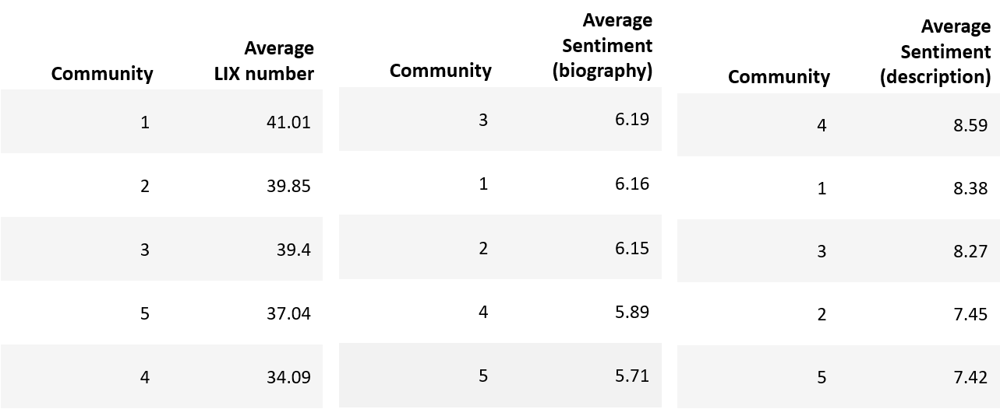

Overview

We can describe the communities such that the first community is
dominated by European users, whereas the next three are dominated
by users in North America and last one with users in Asia. Regarding
programming language, we again see Python appearing in all communities,
though the fourth is mainly described by using C# . This is though also the
community with the least average stars indicating lower interest from other users.
The highest average stars is given to communities mainly using Python
and JavaScript.
Text Analysis

The first and biggest community ranks as the second regarding
sentiments and first for the LIX number, showing that this network
has quite a good vibe with a higher level of language use. It can be
seen that the happiest community in terms of their biography is the third
community with microsoft, however they rank neutral regarding description
sentiment. The fifth and smallest community comes across having the lowest
sentiments revealing a less good vibe. The second community with students
scores rather low in description sentiment maybe due to encountering many
issues in their research projects, and they are actually quite high in language
complexity. Unexpectedly, the opposite applies for the fourth community with
researches where it seems they are not complicated in language use. They are
not happy in their biographies though they might encounter less frustration in
their coding with higher sentiment in descriptions. Quite interesting when this is
the only community mainly using _C#_.